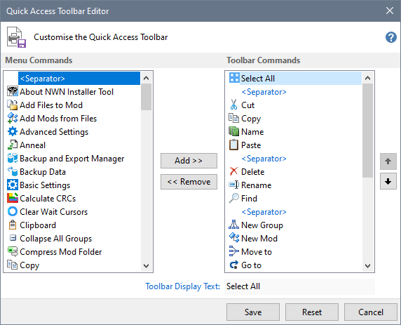
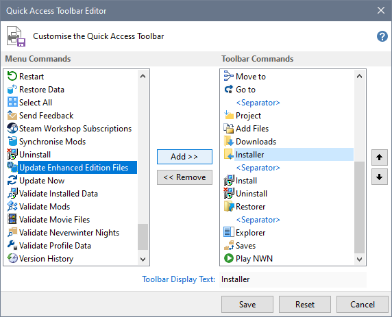
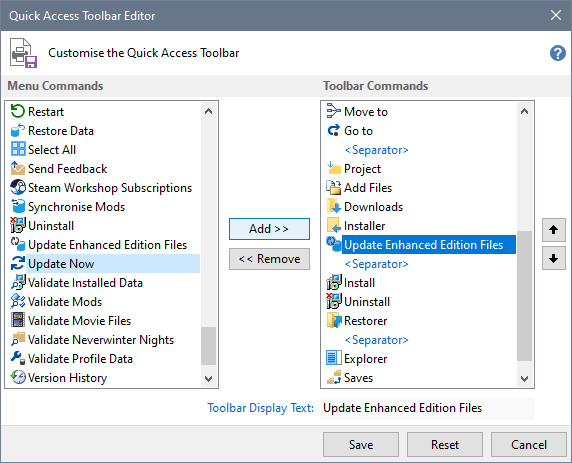
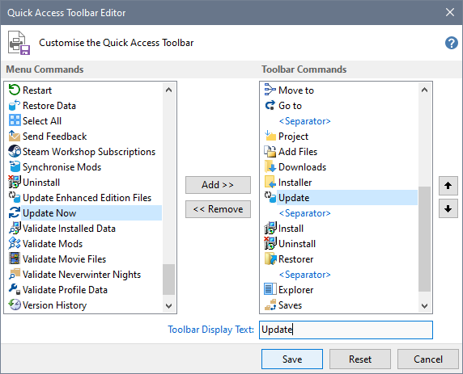

Use the Quick Access Toolbar Editor to add, remove or edit toolbar items.

- Select the Menu Command you want to add and its position in the ToolBar Commands, then click Add >>

- The Toolbar Commands list is updated with a new entry.

- You can shorten the text that will be displayed under the icon and then click Save.

Related Topics
Specify your Preferences
Specify program and file Locations
Specify Configuration Settings
Customise the Run menu
Customise the Web menu
Work with the Extensions map
Work with the Folders map
Work with the Files map
Work with the Excludes map
Work with Fonts and Colours
Customise the Quick Access Toolbar
Export and Import Settings
Import Map Settings